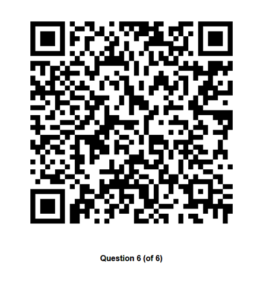
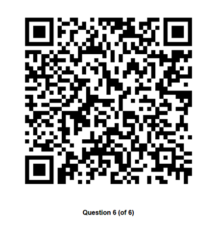

Învăţăm
Codul QR este o gamă de standarde de codare cu formă de bare bidimensionale (cod matrice). Primul astfel de standard a fost creat în 1994 de către compania japoneză Denso Wave. QR este o prescurtare din engleză de la quick response („răspuns rapid”).
Creatorii codului au vrut să producă un decodor rapid. Codul QR este marcă înregistrată (trademark) a companiei Denso Wave, Inc. Deși aceste coduri nu sunt încă utilizate în multe părți ale lumii, ele sunt foarte frecvente în Japonia, unde acestea sunt cea mai populară formă de bare bidimensionale. Între timp s-au răspândit și în SUA, Canada, Germania și alte țări.
Sunt utilizate cu regularitate pe telefoanele mobile de tip smartphone, deoarece codurile QR pot reprezenta (în mod codificat) adrese de situri Internet (de tip URL); pentru acces rapid la un sit dorit utilizatorul trebuie doar să îi scaneze codul QR cu ajutorul camerei foto din telefonul său mobil. Un software cititor interpretează imaginea și descifrează codul, iar browserul telefonului îl direcționează pe utilizator către URL-ul în cauză. Simplitatea acestor legături de la lumea fizică spre lumea electronică, cunoscute sub numele de „hyperlinkuri fizice” (în engleză hardlink), explică popularitatea lor. Codul QR permite companiilor să câștige noi clienți. El devine foarte util atunci când adresele URL sunt lungi și tastarea acestora într-un browser pe telefonul mobil ar fi nepractică.
Un cod QR poate stoca un maxim de 7.089 caractere numerice și 4.296 de caractere alfanumerice. Există două tipuri principale de coduri QR: „Micro QR” și „Design QR”.
Structura standardului QR permite organizațiilor să insereze în cod nu numai informația textuală necesară, dar și imagini, logouri sau caractere speciale, pentru a-l face mai atrăgător și mai ușor de recunoscut, fără pierdere de informații. Rezultatul se numește Design QR. Acesta a fost prevăzut cu scopul de a putea fi ușor de recunoscut de către clienți. De obicei un Design QR se aseamănă cu logoul firmei.
 
